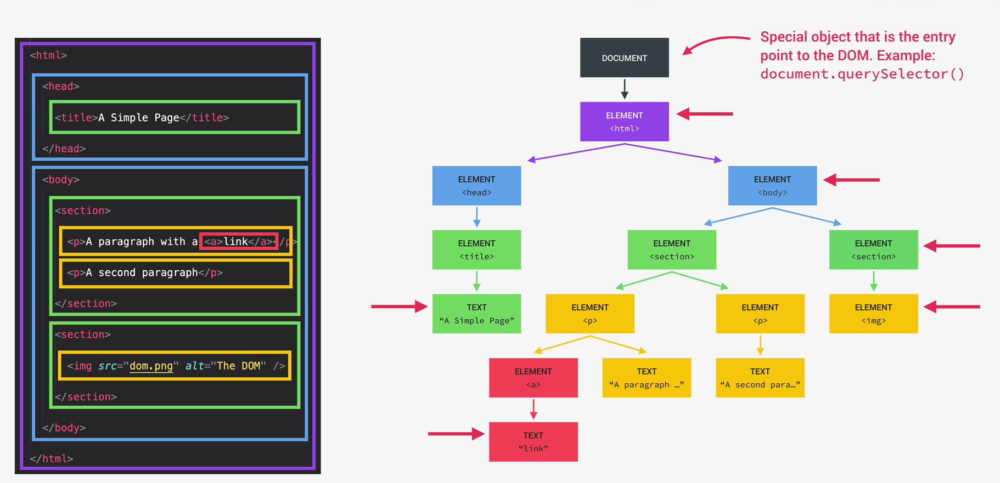

DOM and Manipulation
DOM :
Document Object Model
Structured Representation of HTML document Representation
DOM allows javascript to access HTML elements and styles to manipulate
them.
Example :
we will be able to change text, HTML attributes and also change css
styles from our JavaScript.
we can say, DOM is basically a connection point b/w HTML Document and
Javascript code.
Key Features :
- Selecting & Manipulating Elements
- Handling click events
- Manipulating CSS
- Working with class
Note :
DOM is automatically created by the browser as soon as the HTML page
loads.
And it's stored in a tree structure (generated by browser on HTML Load).
Document
Document is a special object that we have access to in javascript and
this object serves as an entry point into the DOM.
Example : document.querySelector() etc.
Important Note :
use # for select id from HTML to manipulate DOM.
use . for select class from HTML to manipulate DOM.
DOM and all the methods and properties that we can use to manipulate the
DOM, such as document or query selector and lots of another stuff are
actually "not a part of javascript".
However, Javascript is actually just a dialect of ECMAScript
specification.
# Question: If the DOM is not a part of javascript language then how
does this all work?
# Answer: DOM and DOM methods are actually part of something called the
WebAPI's.
Web APIs (Application Programming Interface)
Web APIs are like libraries that browsers implement and that we can
access from our javascript code or interact with javascript code.
Web APIs are basically libraries that are also written in javascript
and that are automatically available for us to use.
